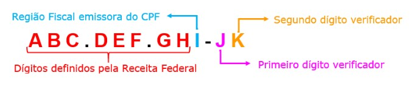

Como Funciona o Cálculo do CPF?
- Os primeiros oito dígitos formam o número-base definido pela Receita Federal no momento da inscrição.
- O nono dígito, define a Região Fiscal responsável pela inscrição.
- O décimo e o décimo primeiro são os dígitos que vão verificar os 9 anteriores a eles

O nono digito vai depender do estado de onde foi emitido:
1- DF, GO, MS MT e TO
2- AC, AM, AP, PA, RO e RR
3- CE, MA e PI
4- AL, PB, PE, RN
5- BA e SE
6- MG
7- ES e RJ
8- SP
9- PR e SC
0- RS
Podem existir casos específicos em que esse nono dígito não esteja de acordo com os determinados acima.
Então calculamos os dígitos verificadores
Exemplo:
ABC.DEF.GHI-JK
A × 10 + B × 9 + C × 8 + D × 7 + E × 6 + F × 5 + G × 4 + H × 3 + I × 2 = TOTAL
Depois pegamos o resto da divisão do TOTAL com o número 11
TOTAL % 11 = RESTO (% é usado na programação para pegar o resto da divisão e não a porcentagem em si)
E então calculamos o número J realizando a diferença entre o RESTO e o número 11
11 - RESTO = J
O mesmo calculo irá servir para o número K, com a única diferença é que vamos começar pela letra B e terminar com a letra J na hora da multiplicação
B × 10 + C × 9 + D × 8 + E × 7 + F × 6 + G × 5 + H × 4 + I × 3 + J × 2 = TOTAL
TOTAL % 11 = RESTO
11 - RESTO = K
Referências